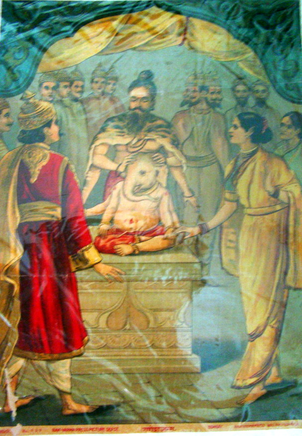

~3 minute read · home puja
खजराना गणेश और दबी मूर्ति
Khajrana Ganesh and the buried murti
स्वप्न ने धरती दिखाई — और इंदौर को अपना गणेश मिला।
A dream pointed to earth — and Indore found its Ganesh.

कथा · The story
उन्नीसवीं सदी के इंदौर में मंगल भट्ट जी को स्वप्न आया — खजराना की धरती में गणेश विराजमान हैं। खुदाई से स्वयंभू मूर्ति प्रकट हुई। तंबू से शुरू हुआ मंदिर आज मध्य भारत के प्रमुख विनायक तीर्थों में है। मोदक–लड्डू की लकीर इसलिए — परिवार मानते हैं नगर का विघ्नहर्ता सच्ची मन्नत सुनता है। यह कथा युद्ध नहीं, खोज, धैर्य और नगर की श्रद्धा की है।
In nineteenth-century Indore, a devotee named Pandit Mangal Bhatt dreamed that a Ganesh murti lay buried where the city would later grow. Digging at Khajrana revealed a swayambhu Ganesh in the earth. The shrine began as a simple tent; today it is among central India's most visited Vinayaka seats. Modak and laddoo sellers line the lane because families believe the first obstacle-remover of the city listens to honest vows. The sthala does not claim a Puranic battle — it claims discovery, patience, and the faith of a town that kept digging.
विस्तृत कथा · Fuller telling
A longer retelling for readers who want more detail — optional; the short story above is enough for a quick home reading.
उन्नीसवीं सदी के इंदौर में मंगल भट्ट जी को स्वप्न आया — खजराना की धरती में गणेश विराजमान हैं। खुदाई से स्वयंभू मूर्ति प्रकट हुई। तंबू से शुरू हुआ मंदिर आज मध्य भारत के प्रमुख विनायक तीर्थों में है। मोदक–लड्डू की लकीर इसलिए — परिवार मानते हैं नगर का विघ्नहर्ता सच्ची मन्नत सुनता है। यह कथा युद्ध नहीं, खोज, धैर्य और नगर की श्रद्धा की है। घर में अक्सर इस पंक्ति से शुरुआत: स्वप्न ने धरती दिखाई — और इंदौर को अपना गणेश मिला। कथा का मध्य वहाँ है जहाँ संशय और श्रद्धा मिलते हैं — अदालत सबूत नहीं, कल का धैर्य। उन्नीसवीं सदी के इंदौर में मंगल भट्ट जी को स्वप्न आया — खजराना की धरती में गणेश विराजमान हैं। बच्चे पूछते हैं मंदिर आज क्यों; जवाब कतार, प्रसाद, मन्नत की डोर में है। क्षेत्रीय कथाएँ भिन्न नाम देती हैं — सम्मान से सुनो। रीति क्या याद रखती है: बुध और अंगारकी पर मोदक — खजराना के प्रकट विनायक की स्मृति। Before a new venture, offer one modak at home remembering Khajrana — begin with gratitude, not haste. यह TirthaYatra की मूल पुनर्लेखन है — व्यापक तीर्थ-परंपरा स्मृति पर; शब्दशः शास्त्र नहीं।
In nineteenth-century Indore, a devotee named Pandit Mangal Bhatt dreamed that a Ganesh murti lay buried where the city would later grow. Digging at Khajrana revealed a swayambhu Ganesh in the earth. The shrine began as a simple tent; today it is among central India's most visited Vinayaka seats. Modak and laddoo sellers line the lane because families believe the first obstacle-remover of the city listens to honest vows. The sthala does not claim a Puranic battle — it claims discovery, patience, and the faith of a town that kept digging. Elders at home often begin with the line: A dream pointed to earth — and Indore found its Ganesh. The middle of the telling is where doubt and devotion meet — not to prove history like a court, but to shape tomorrow's patience. In nineteenth-century Indore, a devotee named Pandit Mangal Bhatt dreamed that a Ganesh murti lay buried where the city would later grow. Children ask why the shrine still matters; the answer is in the queue, the modak, the thread tied after a vow kept. Regional tellings add names and dates that differ; receive cousin versions with respect. What practice remembers: Wednesday and Angarki Chaturthi modak offerings remember the revealed Vinayaka of Khajrana. Before a new venture, offer one modak at home remembering Khajrana — begin with gratitude, not haste. This TirthaYatra retelling draws on widely cited sthala-purana and pilgrimage memory — not a verbatim scripture quote, not affiliated with any temple trust.
क्यों · Why this ritual
बुध और अंगारकी पर मोदक — खजराना के प्रकट विनायक की स्मृति।
Wednesday and Angarki Chaturthi modak offerings remember the revealed Vinayaka of Khajrana.
Takeaway for home
Before a new venture, offer one modak at home remembering Khajrana — begin with gratitude, not haste.
Continue · आगे पढ़ें
Common questions · सामान्य प्रश्न
खजराना गणेश और दबी मूर्ति
उन्नीसवीं सदी के इंदौर में मंगल भट्ट जी को स्वप्न आया — खजराना की धरती में गणेश विराजमान हैं। खुदाई से स्वयंभू मूर्ति प्रकट हुई। तंबू से शुरू हुआ मंदिर आज मध्य भारत के प्रमुख विनायक तीर्थों में है। मोदक–लड्डू की लकीर इसलिए — परिवार मानते हैं नगर का विघ्नहर्ता सच्ची मन्नत सुनता है। यह कथा युद्ध नहीं, खोज, धैर्य और नगर…
Khajrana Ganesh and the buried murti
In nineteenth-century Indore, a devotee named Pandit Mangal Bhatt dreamed that a Ganesh murti lay buried where the city would later grow. Digging at Khajrana revealed a swayambhu Ganesh in the earth. The shrine began as a simple tent; today it is among central India's most visited Vinayaka seats. Modak and laddoo sell…
क्यों यह रीति / Why this ritual?
बुध और अंगारकी पर मोदक — खजराना के प्रकट विनायक की स्मृति।
घर के लिए takeaway?
Before a new venture, offer one modak at home remembering Khajrana — begin with gratitude, not haste.
Feedback · सुधार
Help us validate this page: suggest a correction, add a detail, or highlight something useful for home puja readers.
Feedback is emailed to TirthaYatra for editorial review. It is not published live automatically (safer for quality and ads policy). You can also keep a personal copy on this device.